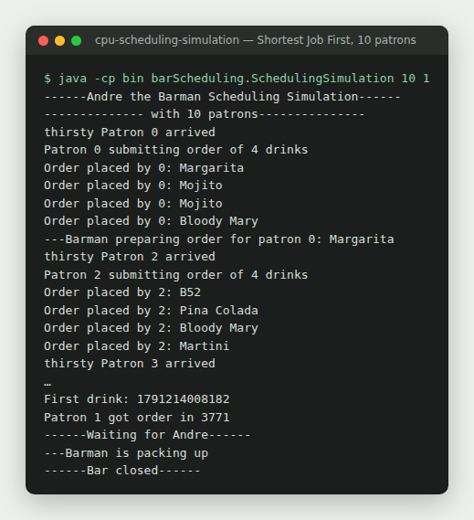
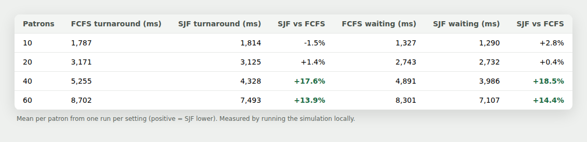

Coursework extension · Operating systems
CPU Scheduling Simulation
A Java simulation comparing First Come First Served (FCFS) and Shortest Job First (SJF) scheduling, analysing waiting time, turnaround time and response time as system load increases.
The simulation
Running, and measured.
I ran the simulation locally at four load levels for each algorithm.


Model
A single-server system.
Patrons
Processes arriving over time at staggered intervals.
Drink orders
Individual units of work, equivalent to CPU bursts.
The barman
The CPU, serving one order at a time.
The shared queue
The ready queue. The scheduling policy is chosen at runtime.
Scheduling policies
- FCFS: orders are served strictly in arrival order, using a FIFO
LinkedBlockingQueue. - SJF: the shortest orders go first, using a
PriorityBlockingQueueordered by execution time.
What I added to the provided code
- Scheduling behaviour using concurrent queue selection
- Coordinated thread startup with
CountDownLatch, so thread creation order does not bias results - Metric collection for turnaround, waiting and response time
- Synchronised file logging of experimental results, avoiding race conditions on the output
- Repeated experimental runs under varying patron counts
Limitations, stated up front. Single-server only, no preemption, no context-switch overhead, and no mitigation of starvation
under SJF.